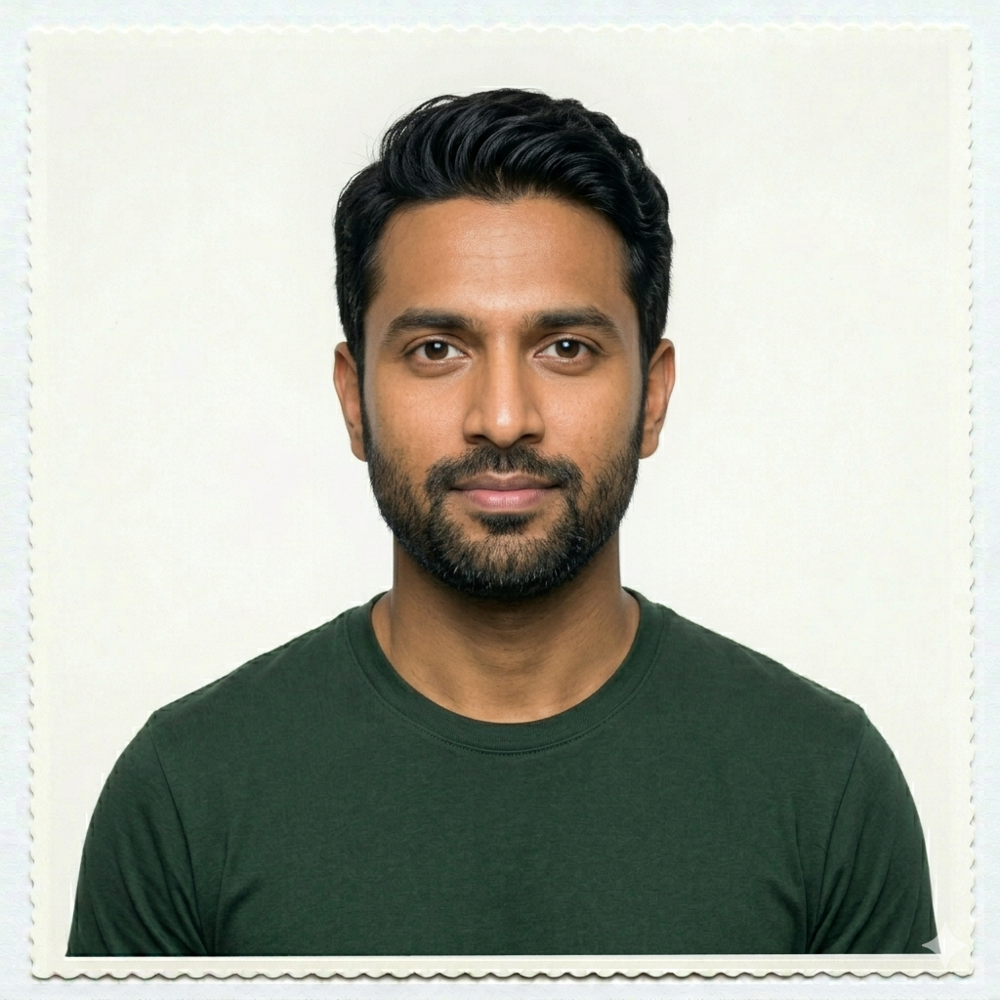
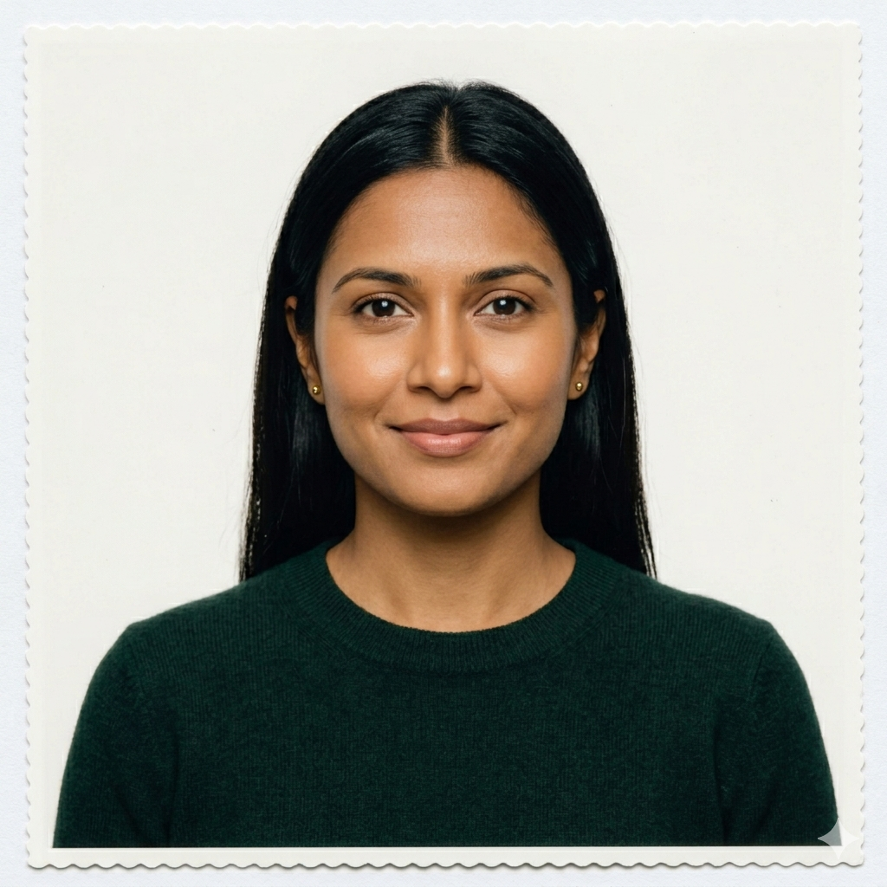
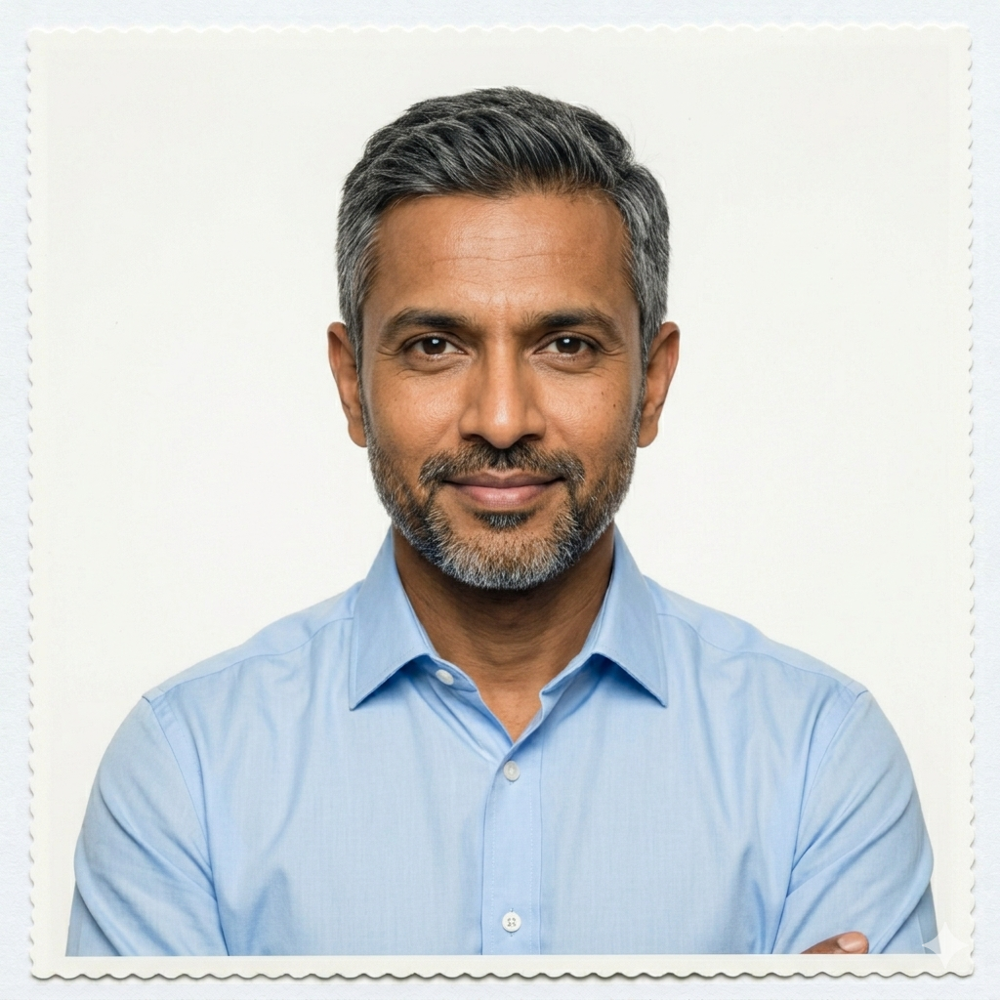
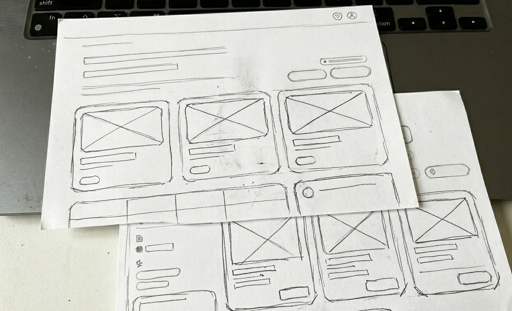
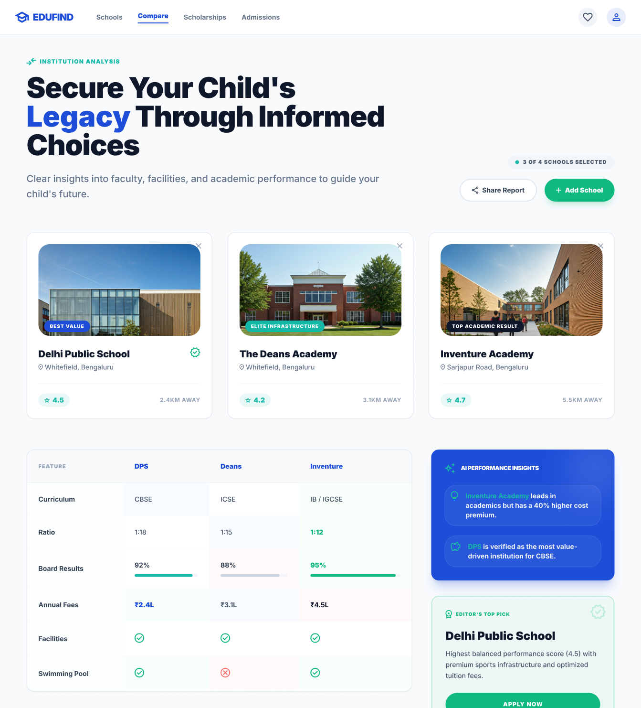
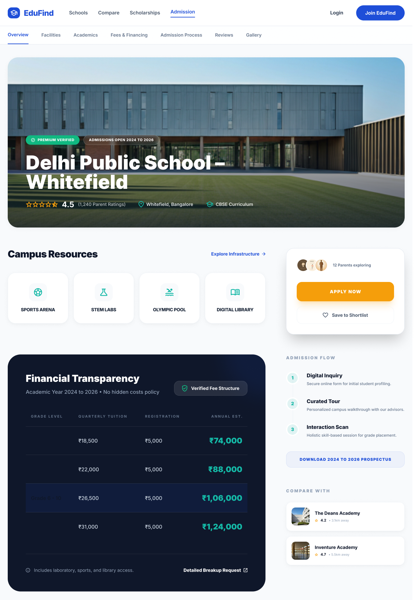

“Parents weren’t lacking options. They were lacking clarity.”
Transformed fragmented school research into a structured decision system

CORE PROBLEM
“School selection is not a search problem. It's a decision problem.”
Fragmented Info
Data scattered across forums, PDFs, and broken websites.
No Comparison
Inability to weigh academics vs culture across 5+ schools.
Admission Fog
Missing dates and complex eligibility criteria across platforms.
Low Trust
High dependency on unverified word-of-mouth feedback.
WHY IT MATTERS
Emotional Stress
Parents feel anxious about making 'wrong' choices for their child's future.
Time Drain
Average of 40+ hours spent on manual research and site visits.
Long-term Impact
Education is a 10-15 year commitment; mistakes are costly and disruptive.
PROJECT AIM
TARGET AUDIENCE
Primary: Parents (28–45) seeking structural clarity in a chaotic market.
"Bachon ke liye best school dhoondhna sabse badi tensions hai." — Typical parent behavior.
RESPONSIBLE CHARACTER

Amit, 34
Goal: Data-driven comparison of top-tier schools.
Pain: Spends weekends mapping school fees in Excel.

Priya, 31
Goal: Holistic view of extracurriculars and safety.
Pain: Can't trust random website reviews.

Karan, 40
Goal: Managing admission timelines for two kids.
Pain: Misses critical application windows.
RESEARCH DEEP-DIVE
We analyzed manual Excel sheets where parents were tracking 10+ variables across 5+ schools. This revealed that the 'Comparison' link was the missing structural piece.

PRODUCT STRATEGY
Discovery
Contextual search and personalized filters.
Evaluation
Verified profiles with detailed curriculum data.
Comparison
Side-by-side analysis of key decision variables.
Admission
Active planning and tracking tools.
“Empowering parents to make confident education decisions through clarity and structure.”
EARLY IDEATION

"Best school dhoondhna sirf ek search nahi, bache ke bhavishya ka IMP kadam hai."
SYSTEM

JOURNEY
Awareness
Discovery
Research
Comparison
Admission
Decision
ONE STEP AHEAD
Verified School Profiles
Moving away from marketing PDFs to a structured data system. Standardized metrics across all schools ensure a level playing field for comparison.

Structural Comparison
A side-by-side decision matrix that helps parents weigh the variables that matter most—from teacher-student ratios to safety infrastructure.
Admission Intelligence
Built-in calendars and tracking systems that eliminate the risk of missing critical deadlines. The admission roadmap simplifies a 6-month process.

Research time
↓ 65%
Clarity Score
↑ 2x
Decision Speed
↑ 40%
“I can finally compare schools without a 10-column Excel sheet. The structure alone removed the mental block I had for months.”
— Parent Feedback Interview
"Education is Power." In ancient Indian tradition, Vidya (Knowledge) is considered the highest wealth. True schooling isn't just a search for facts, but the foundation of character and clarity. By streamlining the decision process, we ensure that every child starts their journey with the right foundation.